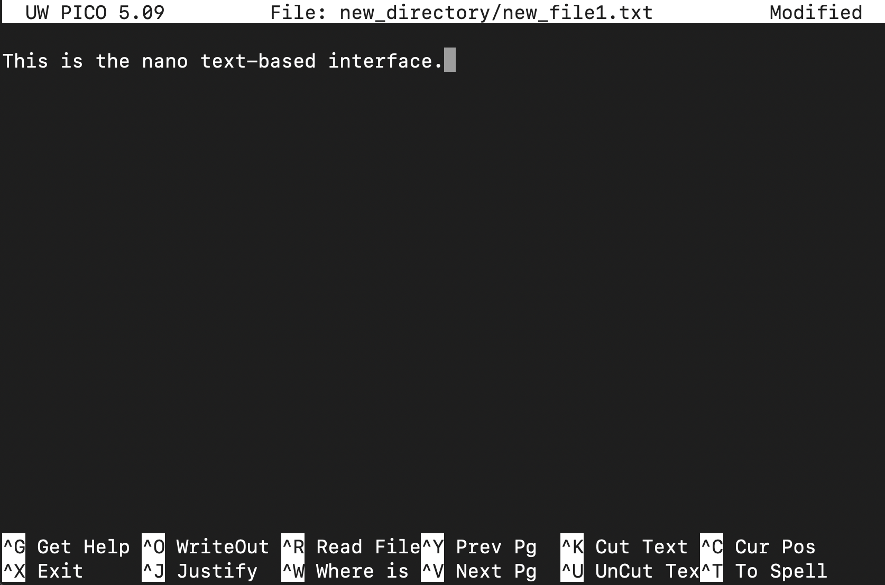

mkdir unix_workshopIntroduction to Unix Command-line
Part 1
Natalie Gill
Gladstone Bioinformatics Core
November 11, 2025
Introductions
Natalie Gill
Bioinformatician II
The Unix Command-line
What is Unix?
- A family of operating systems that date back to 1970s
- Designed to run on different types of computer hardware
- macOS and Linux are descendants of Unix
- Often used in industry and scientific research
What is the Command-line?
- A text-based interface for interacting with the operating system
- Execute commands to perform various tasks like:
- Navigating the file system
- Editing files
- Command-line interfaces (CLIs) are how users interacted with computers before graphical interfaces like Windows
Advantages of using CLIs
- Allows for automation and batch processing of data
- Provides more control and flexibility over data manipulation
- Interact with High-Performance Computing clusters (HPCs) like Wynton
- Speed
The Terminal
The software that provides access to the CLI
Open your terminal
- Mac: press Cmd + Space and type “terminal”
- Linux: press Ctrl+Alt+T
- Windows: open the Ubuntu app
Download the workshop materials
- Copy and paste each of these into your terminal, press enter after each one:
The shell
- A shell is a specific type of CLI that provides access to the OS as a whole
- There are several different Unix shells
- Bash : The most widely used and the default shell on most Linux systems
- Zsh : an extended version of Bash and is now the default on newer versions of macOS
The shell
- Check which shell you are using by typing:
- We will use bash since it is the most widely used shell
- If your shell is not set to bash, type
chsh -s /bin/bashand press enter
Commands
Shell commands are basic instructions used to perform specific tasks.
command_name -[option(s)] [argument(s)]
Example:
Here we are providing multiple options to the ls command and the directory part_1 as an argument
- To cancel a command press CTRL+C
man: pull up the manual page for a command
ECHO(1) General Commands Manual ECHO(1)
NAME
echo – write arguments to the standard output
SYNOPSIS
echo [-n] [string ...]
DESCRIPTION
The echo utility writes any specified operands, separated by single blank
(‘ ’) characters and followed by a newline (‘\n’) character, to the
standard output.
The following option is available:
-n Do not print the trailing newline character. This may also be
achieved by appending ‘\c’ to the end of the string, as is done by
iBCS2 compatible systems. Note that this option as well as the
effect of ‘\c’ are implementation-defined in IEEE Std 1003.1-2001
(“POSIX.1”) as amended by Cor. 1-2002. Applications aiming for
maximum portability are strongly encouraged to use printf(1) to
suppress the newline character.
Some shells may provide a builtin echo command which is similar or
identical to this utility. Most notably, the builtin echo in sh(1) does
not accept the -n option. Consult the builtin(1) manual page.
EXIT STATUS
The echo utility exits 0 on success, and >0 if an error occurs.
SEE ALSO
builtin(1), csh(1), printf(1), sh(1)
STANDARDS
The echo utility conforms to IEEE Std 1003.1-2001 (“POSIX.1”) as amended
by Cor. 1-2002.
macOS 14.4 April 12, 2003 macOS 14.4Manual pages
Use the arrow keys to navigate the manual and press q to close it
MAN(1) General Commands Manual MAN(1)
NAME
man, apropos, whatis – display online manual documentation pages
SYNOPSIS
man [-adho] [-t | -w] [-M manpath] [-P pager] [-S mansect]
[-m arch[:machine]] [-p [eprtv]] [mansect] page ...
man -f [-d] [-M manpath] [-P pager] [-S mansect] keyword ...
whatis [-d] [-s mansect] keyword ...
man -k [-d] [-M manpath] [-P pager] [-S mansect] keyword ...
apropos [-d] [-s mansect] keyword ...
DESCRIPTION
The man utility finds and displays online manual documentation pages. If
mansect is provided, man restricts the search to the specific section of
the manual.
The sections of the manual are:
1. General Commands Manual
2. System Calls Manual
3. Library Functions Manual
4. Kernel Interfaces Manual
5. File Formats Manual
6. Games Manual
7. Miscellaneous Information Manual
8. System Manager's Manual
9. Kernel Developer's Manual
Options that man understands:
-M manpath
Forces a specific colon separated manual path instead of the
default search path. See manpath(1). Overrides the MANPATH
environment variable.
-P pager
Use specified pager. Defaults to “less -sR” if color support is
enabled, or “less -s”. Overrides the MANPAGER environment
variable, which in turn overrides the PAGER environment variable.
-S mansect
Restricts manual sections searched to the specified colon
delimited list. Defaults to “1:8:2:3:3lua:n:4:5:6:7:9:l”.
Overrides the MANSECT environment variable.
-a Display all manual pages instead of just the first found for each
page argument.
-d Print extra debugging information. Repeat for increased
verbosity. Does not display the manual page.
-f Emulate whatis(1). Note that only a subset of options will have
any effect when man is invoked in this mode. See the below
description of whatis options for details.
-h Display short help message and exit.
-k Emulate apropos(1). Note that only a subset of options will have
any effect when man is invoked in this mode. See the below
description of apropos options for details.
-m arch[:machine]
Override the default architecture and machine settings allowing
lookup of other platform specific manual pages. This option is
accepted, but not implemented, on macOS.
-o Force use of non-localized manual pages. See IMPLEMENTATION
NOTES for how locale specific searches work. Overrides the
LC_ALL, LC_CTYPE, and LANG environment variables.
-p [eprtv]
Use the list of given preprocessors before running nroff(1) or
troff(1). Valid preprocessors arguments:
e eqn(1)
p pic(1)
r refer(1)
t tbl(1)
v vgrind(1)
Overrides the MANROFFSEQ environment variable.
-t Send manual page source through troff(1) allowing transformation
of the manual pages to other formats.
-w Display the location of the manual page instead of the contents
of the manual page.
Options that apropos and whatis understand:
-d Same as the -d option for man.
-s Same as the -S option for man.
When man is operated in apropos or whatis emulation mode, only a subset
of its options will be honored. Specifically, -d, -M, -P, and -S have
equivalent functionality in the apropos and whatis implementation
provided. The MANPATH, MANSECT, and MANPAGER environment variables will
similarly be honored.
IMPLEMENTATION NOTES
Locale Specific Searches
The man utility supports manual pages in different locales. The search
behavior is dictated by the first of three environment variables with a
nonempty string: LC_ALL, LC_CTYPE, or LANG. If set, man will search for
locale specific manual pages using the following logic:
lang_country.charset
lang.charset
en.charset
For example, if LC_ALL is set to “ja_JP.eucJP”, man will search the
following paths when considering section 1 manual pages in
/usr/share/man:
/usr/share/man/ja_JP.eucJP/man1
/usr/share/man/ja.eucJP/man1
/usr/share/man/en.eucJP/man1
/usr/share/man/man1
Displaying Specific Manual Files
The man utility also supports displaying a specific manual page if passed
a path to the file as long as it contains a ‘/’ character.
ENVIRONMENT
The following environment variables affect the execution of man:
LC_ALL, LC_CTYPE, LANG
Used to find locale specific manual pages. Valid values
can be found by running the locale(1) command. See
IMPLEMENTATION NOTES for details. Influenced by the -o
option.
MACHINE_ARCH, MACHINE
Used to find platform specific manual pages. If unset,
the output of “sysctl hw.machine_arch” and “sysctl
hw.machine” is used respectively. See IMPLEMENTATION
NOTES for details. Corresponds to the -m option.
MANPATH The standard search path used by man(1) may be changed by
specifying a path in the MANPATH environment variable.
Invalid paths, or paths without manual databases, are
ignored. Overridden by -M. If MANPATH begins with a
colon, it is appended to the default list; if it ends
with a colon, it is prepended to the default list; or if
it contains two adjacent colons, the standard search path
is inserted between the colons. If none of these
conditions are met, it overrides the standard search
path.
MANROFFSEQ Used to determine the preprocessors for the manual source
before running nroff(1) or troff(1). If unset, defaults
to tbl(1). Corresponds to the -p option.
MANSECT Restricts manual sections searched to the specified colon
delimited list. Corresponds to the -S option.
MANWIDTH If set to a numeric value, used as the width manpages
should be displayed. Otherwise, if set to a special
value “tty”, and output is to a terminal, the pages may
be displayed over the whole width of the screen.
MANCOLOR If set, enables color support.
MANPAGER Program used to display files.
If unset, and color support is enabled, “less -sR” is
used.
If unset, and color support is disabled, then PAGER is
used. If that has no value either, “less -s” is used.
FILES
/etc/man.conf
System configuration file.
/usr/local/etc/man.d/*.conf
Local configuration files.
EXIT STATUS
The man utility exits 0 on success, and >0 if an error occurs.
EXAMPLES
Show the manual page for stat(2):
$ man 2 stat
Show all manual pages for ‘stat’.
$ man -a stat
List manual pages which match the regular expression either in the title
or in the body:
$ man -k '\<copy\>.*archive'
Show the manual page for ls(1) and use cat(1) as pager:
$ man -P cat ls
Show the location of the ls(1) manual page:
$ man -w ls
SEE ALSO
apropos(1), intro(1), mandoc(1), manpath(1), whatis(1), intro(2),
intro(3), intro(3lua), intro(4), intro(5), man.conf(5), intro(6),
intro(7), mdoc(7), intro(8), intro(9)
macOS 14.4 January 9, 2021 macOS 14.4echo: print a string or value of a variable
- Variables : a named container that holds a value or data
- Strings : sequence of characters
Here, we assign the string “Hello, World!” to the variable message and use echo to print its value.
history: list previously run commands
- You can also cycle through previously run commands using the up and down arrow keys
- By default bash stores the last 500 commands, zsh stores the last 1000
- Use the command
clearto clear the output from the terminal
Navigating the File System
The File System

Paths
- Root directory
/ - Current working directory
. - Directory above the current one
.. - User home directory
~ - Absolute: The path starting from root
/data/file1.txt
- Relative: Path from the current directory
./file1.txt
pwd: print working directory
/Users/your_username/unix_workshop- The default working directory when you log in or open a terminal is your user home directory
~
ls: list contents of a directory
-lshow more information (file permissions and size)-ashow all (hidden files)-hfile sizes in human readable format (e.g., 1K, 2G)
cd: move to a directory
total 8
-rw-r--r--@ 1 nelphick staff 60 Apr 12 2023 list_numbers.tsvtotal 8
drwx---r--@ 4 nelphick staff 128 Nov 11 11:00 part_1
drwxr-xr-x@ 3 nelphick staff 96 Nov 11 11:00 part_2
-rw-r--r-- 1 nelphick staff 1790 Nov 11 10:43 unix_workshop.tar.gzCreating and Altering Files
File Permissions

- Permissions for a file or folder are represented by 10 characters
- Each group of 3 represents the permissions for different users:
- Owner of the file/folder
- Group the owns the file
- Others - everyone else
File Permissions
- There are three types of permissions:
- r - read/view the contents of a file/folder
- w - write
- x - execute the file or access a directory
touch: create an empty file
- If the file exists, it will update the time stamp
mkdir: make a directory
-pmake parent directories if they don’t exist
mv: move a file or folder
- Also used to rename files/folders
cp: copy a file or folder
-rto copy a folder (recursive)
rm: remove a file permanently
- This command should always be used with care since the files it is used on cannot be recovered
du: check the size of a file or folder
- h - Displays the output in human readable format
Text editors
- Command-line text editors provide lots of key board shortcuts to navigate and alter files
- Some commonly used ones are:
- Vim : Feature rich, steep learning curve
- nano : Simple and user friendly
nano
Shortcuts for nano
- Ctrl + X : Exit nano
- Ctrl + O : Save the file (write Out)
- Ctrl + W : Search for a string or regular expression
- Ctrl + K : Cut (remove) the current line or selection
- Ctrl + U : Uncut (paste) the most recently cut text
- Ctrl + A : Move the cursor to the start of the current line
- Ctrl + E : Move the cursor to the end of the current line
- Ctrl + G : Show the help menu
Installing Software
Package managers
Used to install and manage software
macOS
- homebrew - not included with the OS and needs to be installed
WSL/Linux
- apt-get - included with Ubuntu
We will not install any software in this workshop but these are how you would access additional software/commands.
Downloading Files
curl: download files from the internet
- We used curl at the begining download the materials
- curl supports multiple protocols but the most commonly used one is HTTPS
-ogives the output file name and location
Other file transfer tools
- wget : like curl, supports fewer protocols and is not always installed
- scp (secure copy) : used to encrypt and transfer files using SSH protocol
- Commonly used to transfer files on HPCs (Wynton) Example:
Searching Files and Combining Commands
grep: searching files with regular expressions
Search the contents of the input file and returns the lines that have a match
Regular Expressions : sequence of characters that forms a search pattern
grep options
- -i : ignore case
- -v : invert match
- -r : recursively searches in all files and subdirectories of a directory
- -c : counts the number of matches found in each file
Regular Expressions
- For a more extensive overview of regular expressions click here
- Some basic ones are:
- ” ^ ” Matches the beginning of a line
- ” . ” Matches any single character except newline
- ” $ ” Matches the end of a line
head/tail: view the first or last n lines of a file
- The default n is 10
- Useful for getting a look at the format of a file
cat: print the contents of a file
cut: get specific columns from a file
- -f : fields that should be returned
- -d : delimiter - character that the columns are separated by
By default cut expects columns to be separated by tab characters.
Combining Commands
- Pipes “|” connect one command to another
- The output of the previous command is used as the input for the next one
- Chaining commands allows you to do complex operations on text streams
Output to a file
- The output of any command can be written to a file with the ” > ” character
tr: translate or substitute characters
sort: sort values
- -n : sort numerically (default is alphabetical)
- -u : sort and remove duplicates
End of Part 1
Other helpful commands
wc: count lines and wordschmod: Change the permissions of a file or directorychown: Change the owner of a file or directorydf: Display information about disk usage and available spaceps: Display information about running processeskill: Stop a running processless: View the contents of a file one page at a timedate: prints the date and timecurl wttr.in: check the weather
Survey
- If you are not attending part 2, please take some time to fill out the workshop survey: https://www.surveymonkey.com/r/bioinfo-training
Additional learning materials
- Software carpentry provides a self paced course:
- Free online books:
Upcoming Data Science Training Program Workshops
Introduction to scATAC-seq Data Analysis
November 17-November 18, 2025 9:00am-12:00pm PST
scATAC-seq and scRNA-seq Data Integration
December 1, 2025 1:00-4:00pm PST
Machine Learning Using R
January 15, 2026 1:00-4:00pm PST
Introduction to R Data Analysis
January 26-January 27, 2026 1:00-4:00pm PST
Experimental Design and Hypothesis Testing Using R
February 2-February 3, 2026 1:00-3:00pm PST